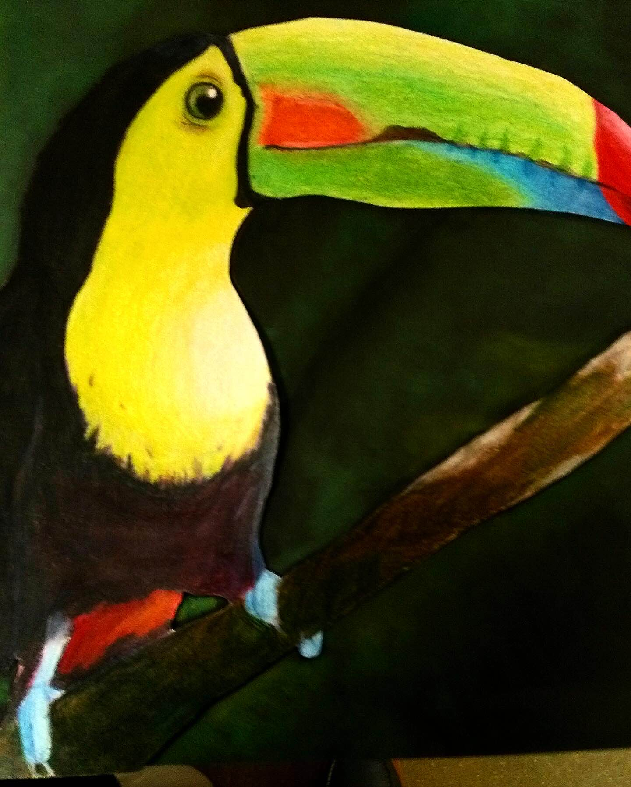
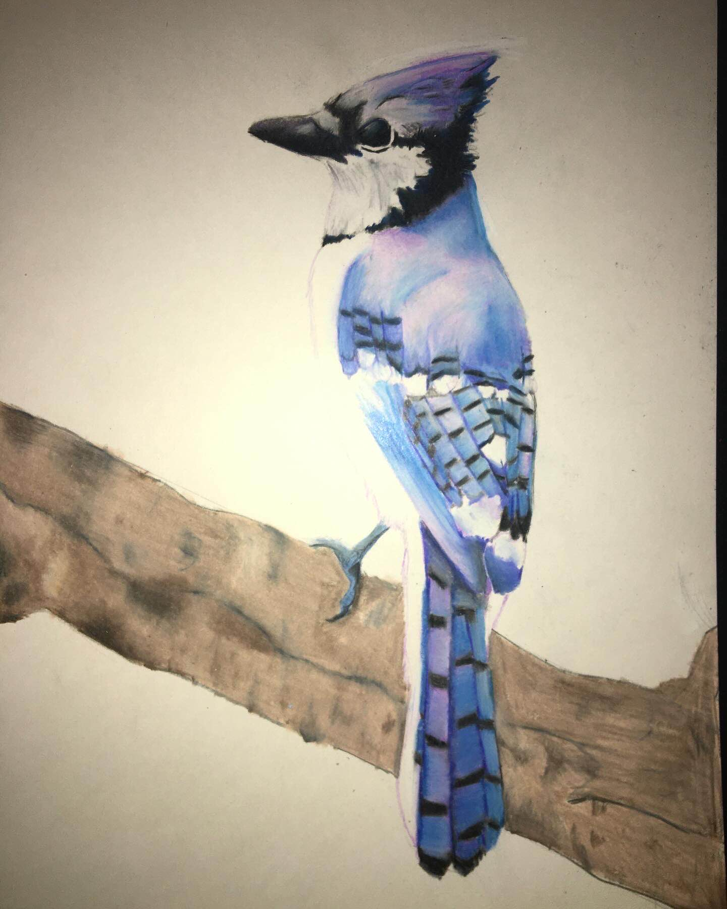
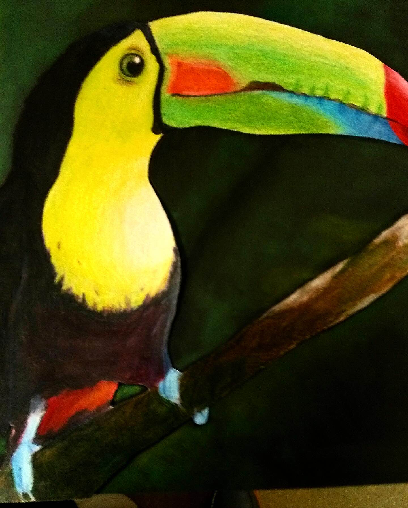
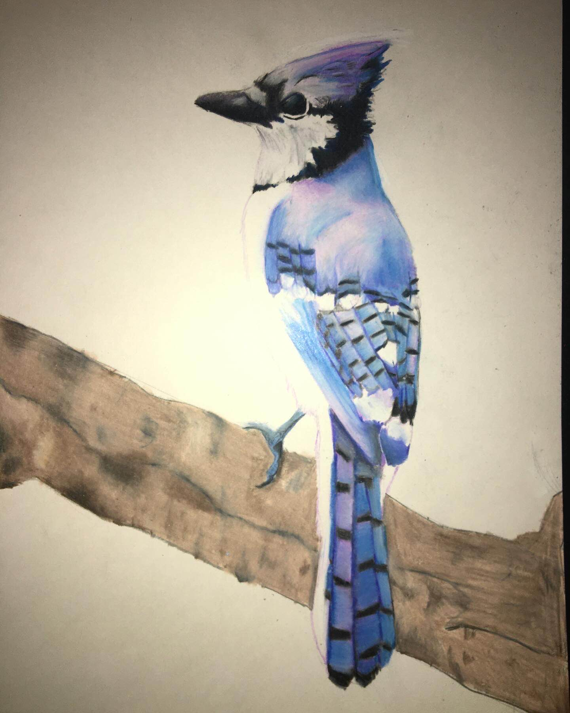


 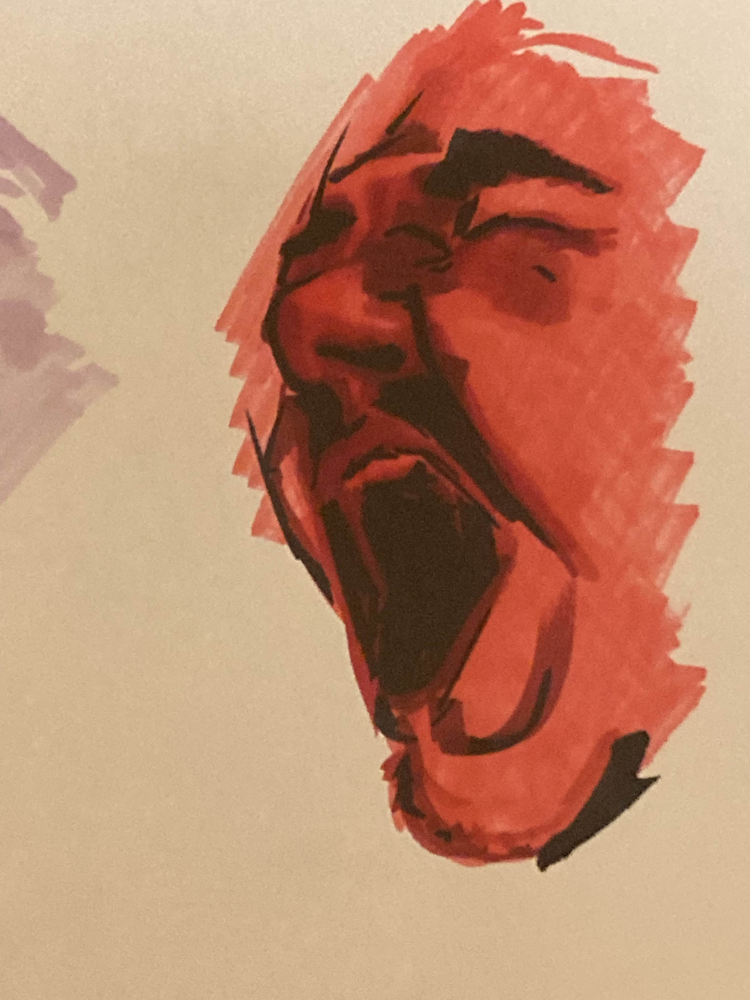
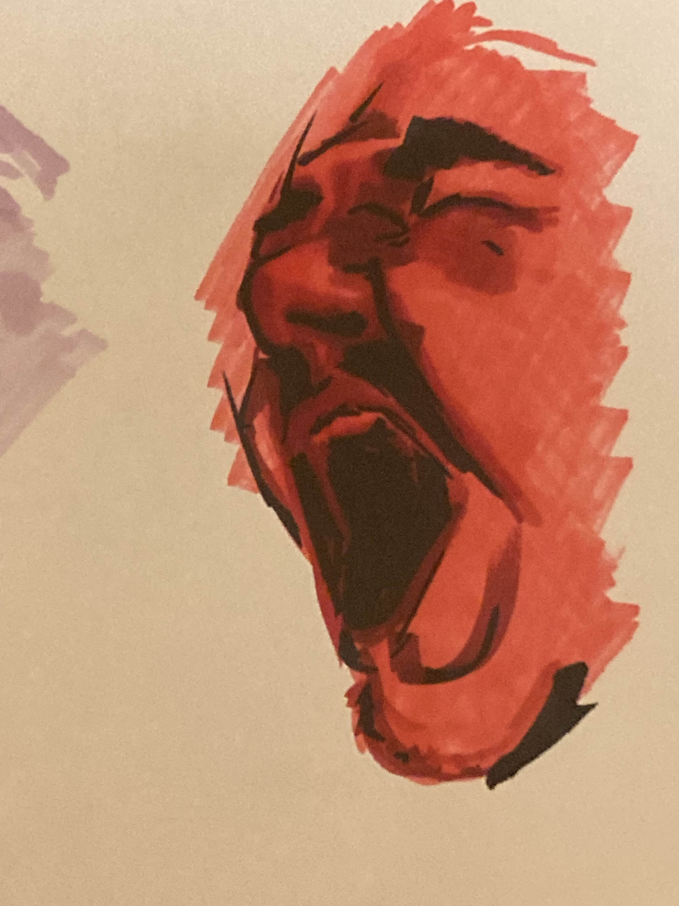


 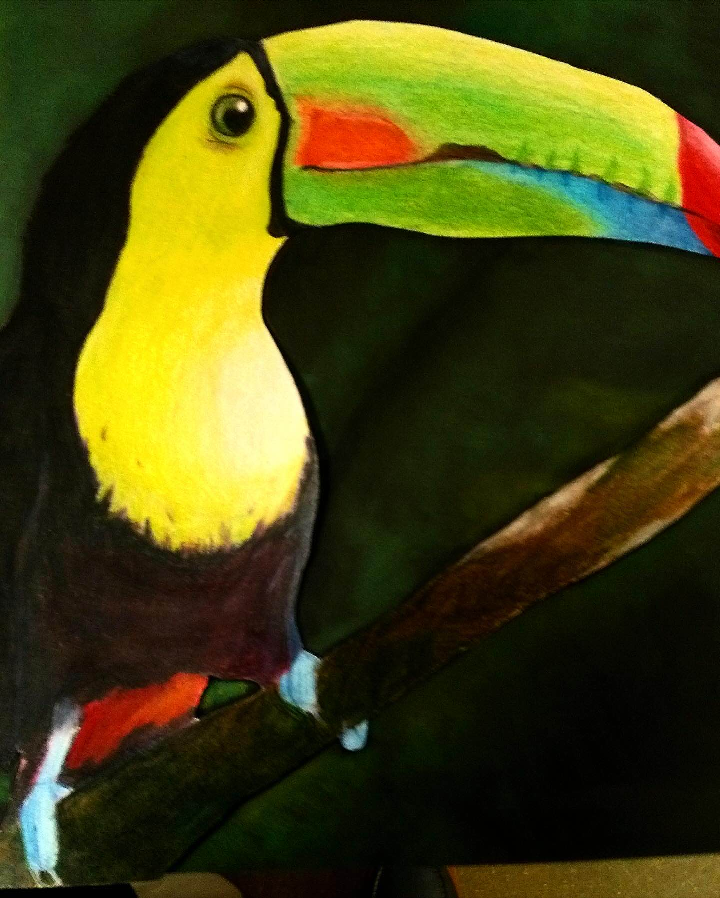
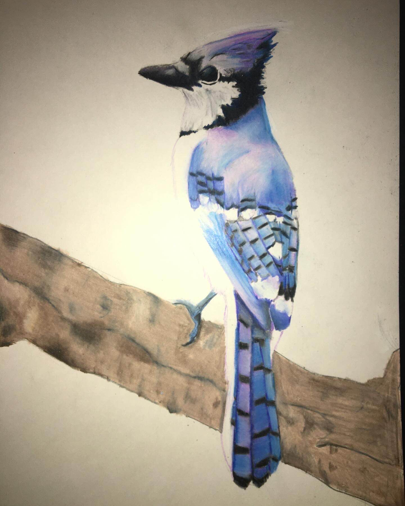
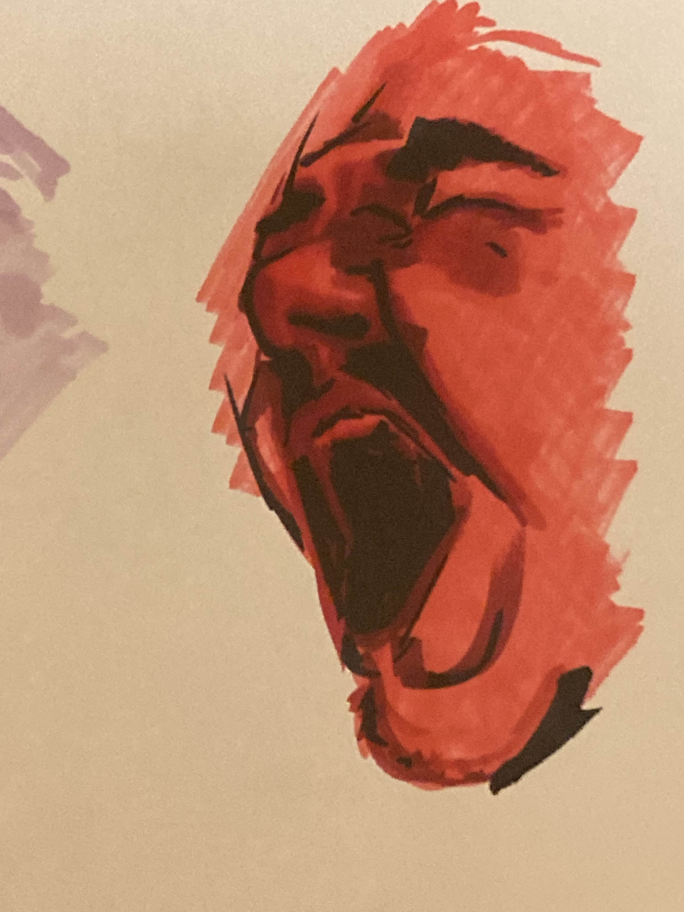
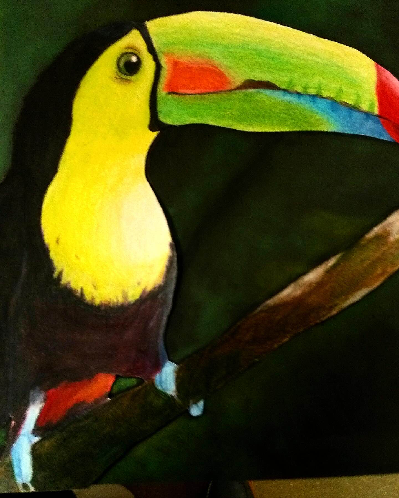
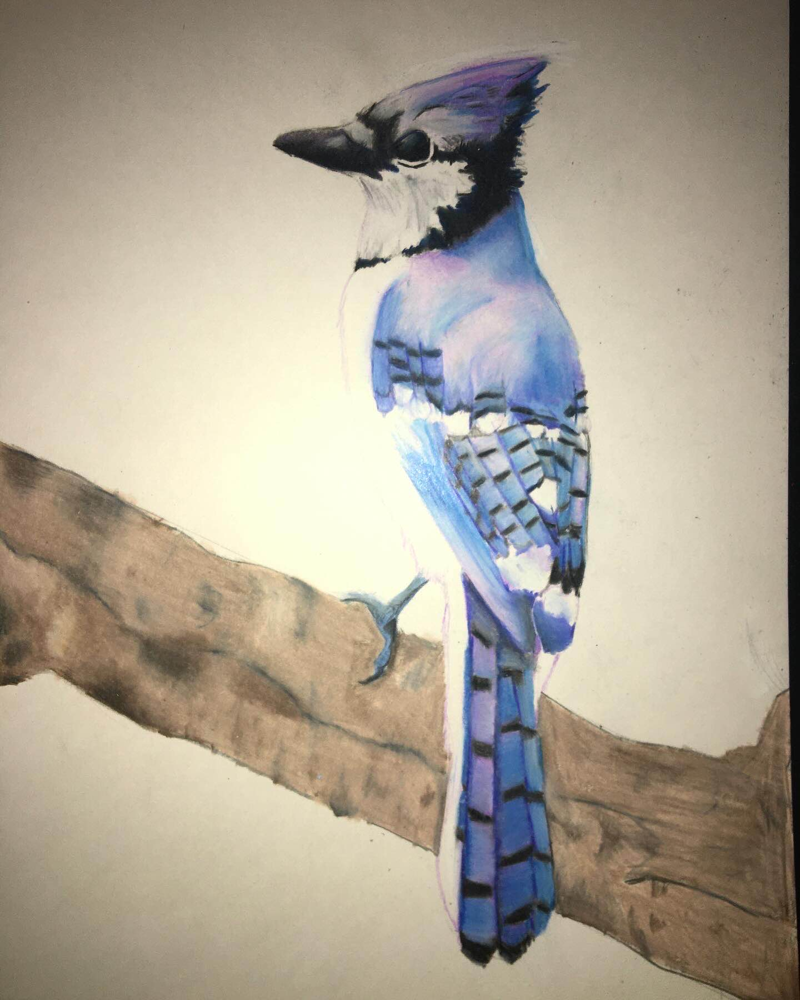
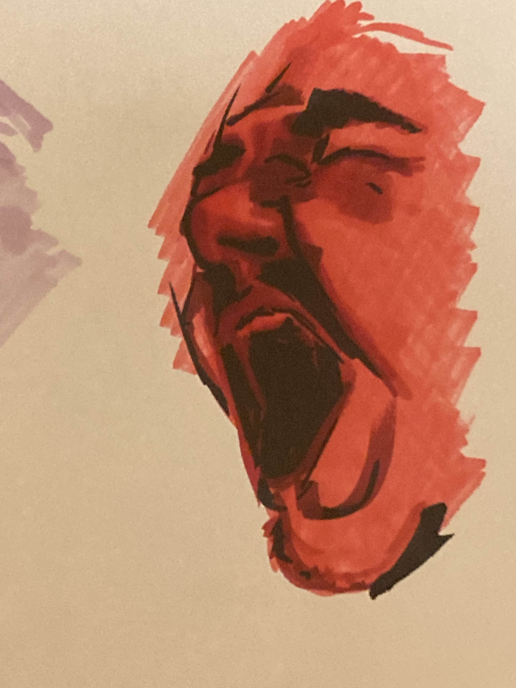
Content for Tab 1
From Highschool I've full-sent art. Bouncing between many mediums and even now I'm still fighting to find a passion I'm interested in. I've gone between things as simple as painting and as complex as sculpture & installations. A lot of my best artworks come from Highschool where I mostly dabbled with pencil and mixed-media and even logos/posters. Upon getting to college my artwork began to branch significantly where I am now painting, sculpting, and more.
Right now I'm an art major at LSU, but I wasn't that at first. Originally in my Freshman year I was a Graphic Design major as I had found a passion for Graphic Design in Highschool. Unfortunately whenever I had vehicle problems in my Sophomore year I had to drop my Graphic Design major because they could not offer Online Courses, so I inevitably had to switch. My favorite color is red :)